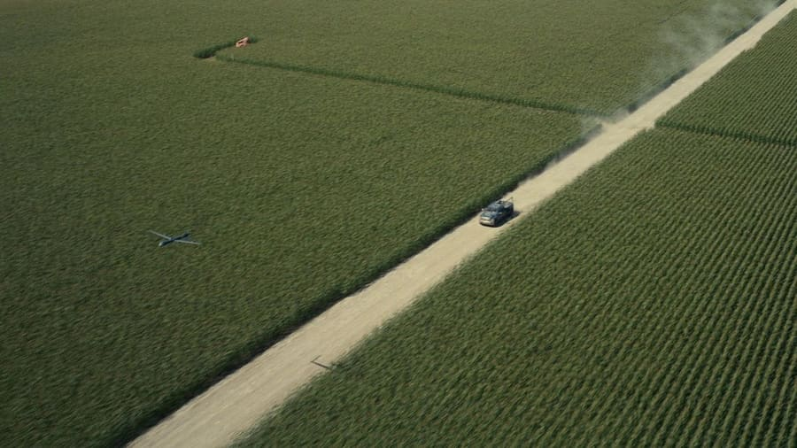
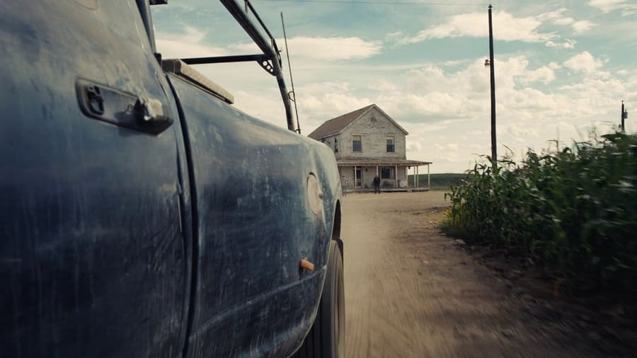
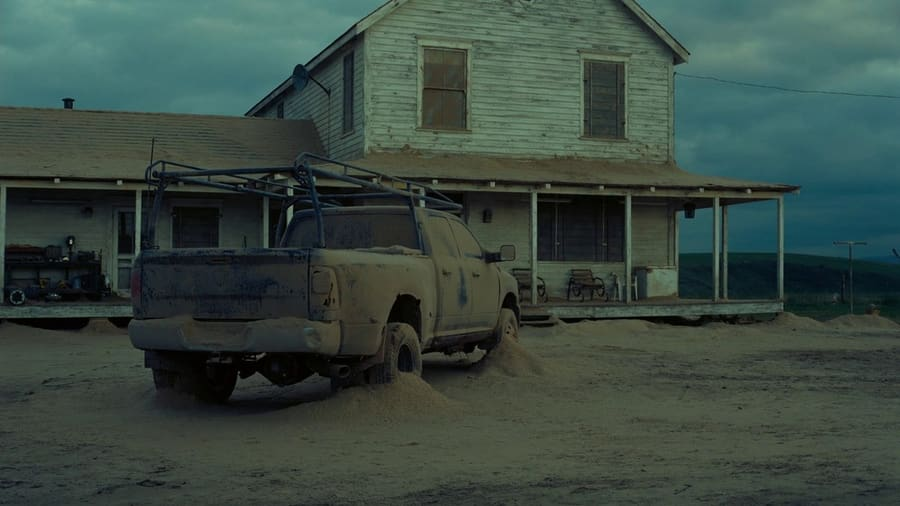
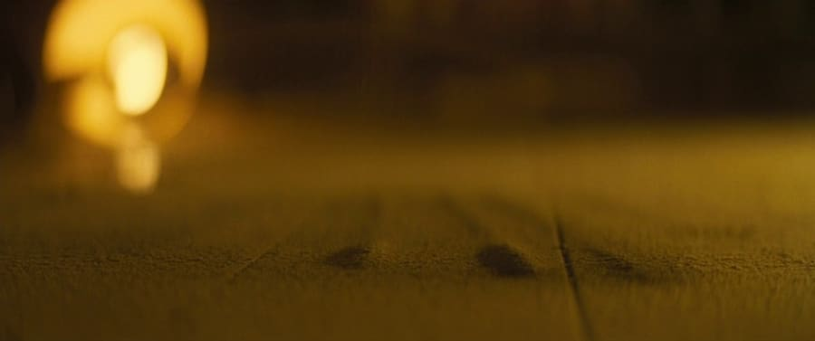
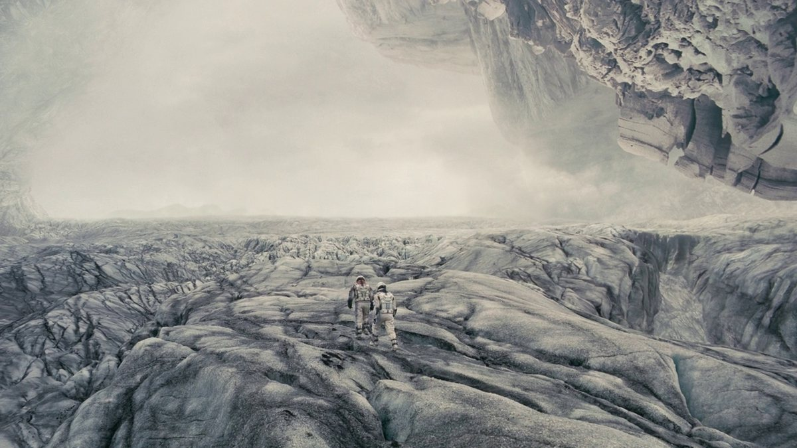
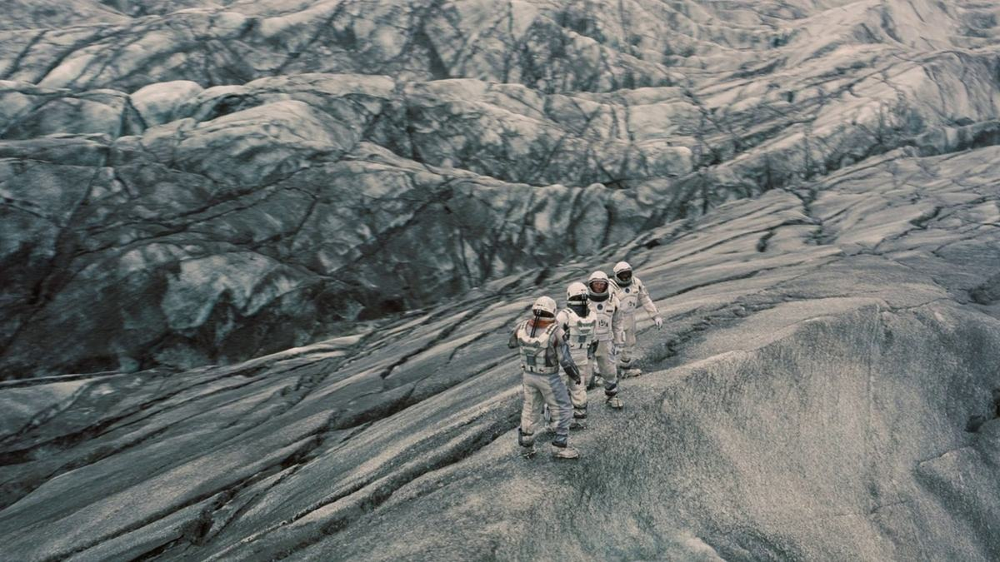

Tira de celuloide por mundo
Prototipo para mundos.html: cada sección de mundo suma un
«fílmico» con fotogramas de esa parte de la trama, que desfila lento.
Pasá el mouse por encima para frenarlo. Con reducir movimiento activo no
autoavanza (se scrollea a mano).
La Tierra
El polvo mata las cosechas. Cooper deja la granja para buscar un mundo nuevo.






Planeta de Mann
Un mundo helado bajo nubes de amoníaco. Mann mintió: no hay nada habitable.




Planeta de Miller
Océano infinito y olas montañosas. Una hora aquí = siete años en la Tierra.


↑ Solo 2 fotogramas disponibles para Miller — en la feature real habría que sumar stills.